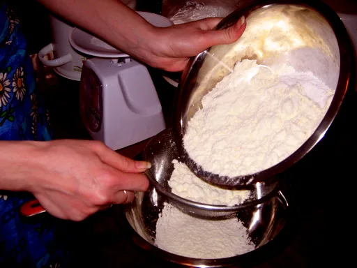
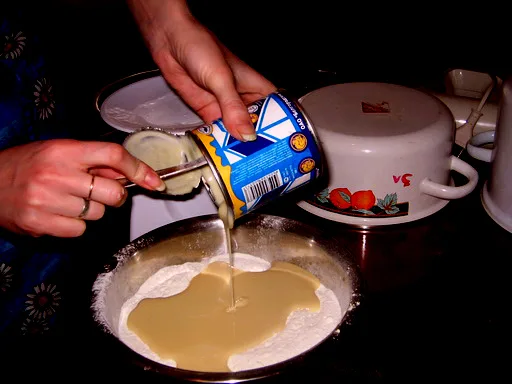
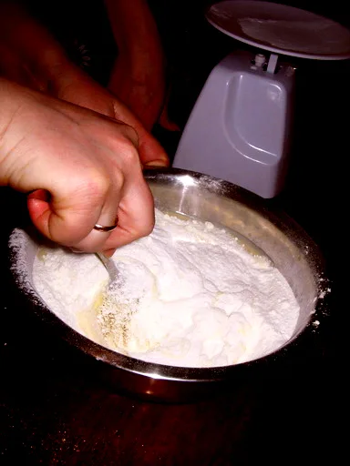
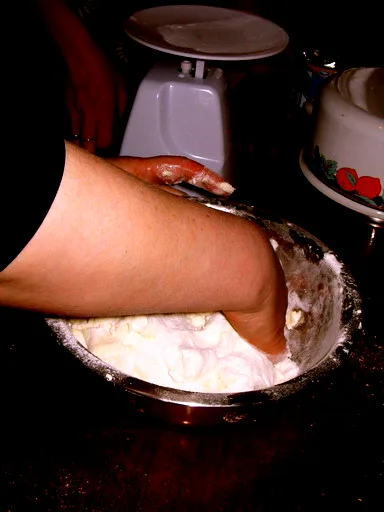
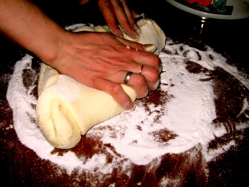
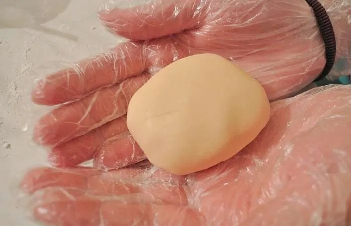
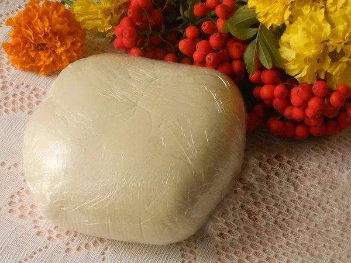
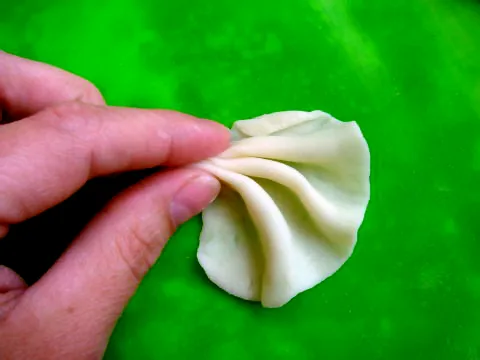

Рецепт мастики зі згущеного молока не вимагає додаткових умінь і попередніх тренувань. Він простий і швидкий в приготуванні. Суміш для ліплення фігурок виходить з першого разу навіть у недосвідчених кондитерів. Тому, любителі солодкого і красивого, скоріше озбройтесь наступними інгредієнтами з інвентарем і сміливо приступайте до справи.
Вам знадобляться:
- 150 грам згущеного молока;
- 1,5 склянки сухого молока – його можна замінити не надто жирними сухими вершками;
- 1 склянка цукрової пудри – в залежності від процесу вимішування може знадобитися трохи більше, ніж вказано;
- 1 чайна ложка лимонного соку – своєрідний консервант, який продовжить термін зберігання готового виробу в холодильнику;
- глибокий посуд.
Цікаво!
Мастика зі згущеного молока чудово підходить для повного покриття поверхні десерту, з її допомогою можна заховати всі недоліки, вирівняти виїмки між коржами. На відміну від цукрової, вона не розкришиться при розрізанні торта, а залишиться м’якою.
З’єднуємо і вимішуємо
Мастика зі згущеного молока для покриття торта готується так:

- Ретельно перемішайте сухе молоко з цукровою пудрою і лимонним соком в глибокому посуді. Слідкуйте, щоб не утворювалися грудочки. Для цього попередньо просійте суху суміш.

- Додайте в отриману однорідну густу масу згущене молоко і вимішуйте до утворення однорідної консистенції.



- Після чого можна починати вимішування на столі, попередньо посипанному цукровою пудрою. “Правильний” мастиковий комок повинен стати пружним і не липнути до рук.

Корисно знати!
Досвідчені господині радять додати пару крапель гліцерину для збільшення еластичності суміші. Також їм можна змастити руки перед вимішуванням.
4. За бажанням можна скористатися харчовими барвниками і дати волю фантазії. Тоді ваша творчість на торті з буйством фарб нікого не залишить байдужим.

5. Готову мастику слід загорнути в харчову плівку і відправити в холодильник на ніч. Перед ліпленням дайте їй трохи обм’якнути при кімнатній температурі.
Подивіться на відео процес приготування.
Краса і смак – запорука гарного свята

Мастика зі згущеного молока відмінно підійде для декорування різноманітних десертів: тортів, капкейків, кейкпопсів… Можна як повністю покрити кондитерський виріб, так і зліпити тематичну композицію, адже пригощатися не тільки смачним, але і красивими ласощами подобається подвійно і дітям, і дорослим.
Однак не варто забувати, що саме прикраси слід приготувати за добу перед планованим торжеством. Тоді фігурка добре підсохне і застигне.
Зберігати заготовку для майбутніх виробів слід в холодильнику або морозилці, попередньо загорнувши її в харчову плівку.